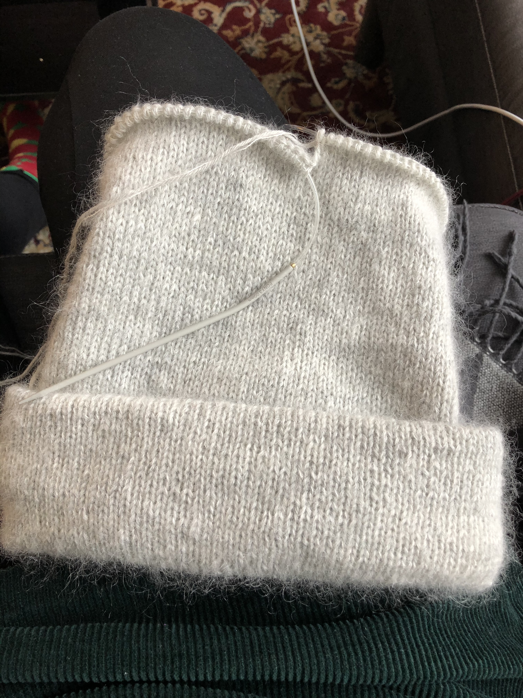
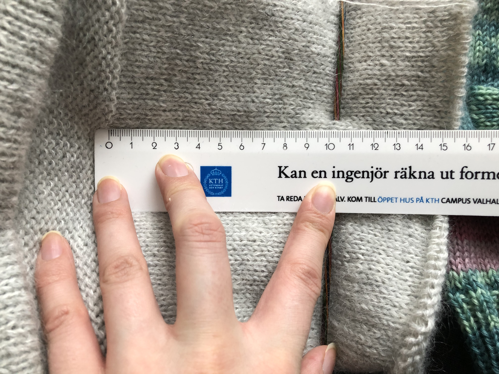
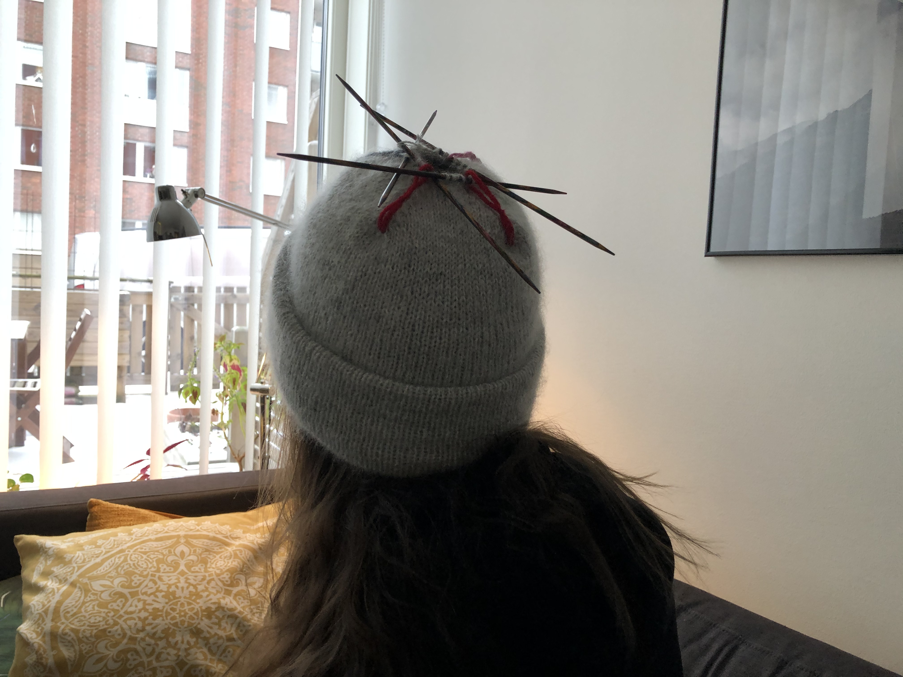
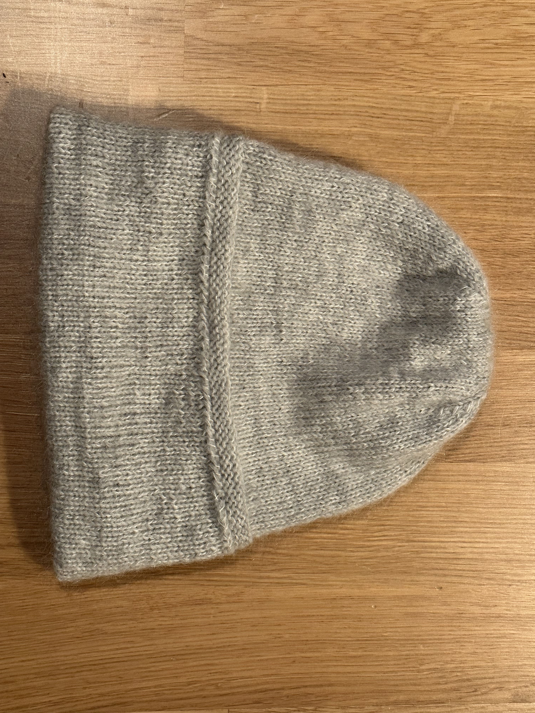
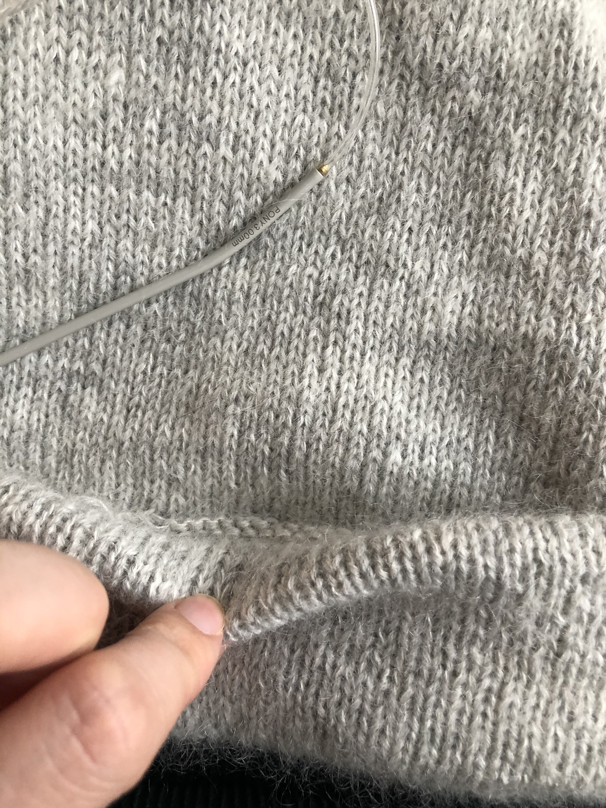
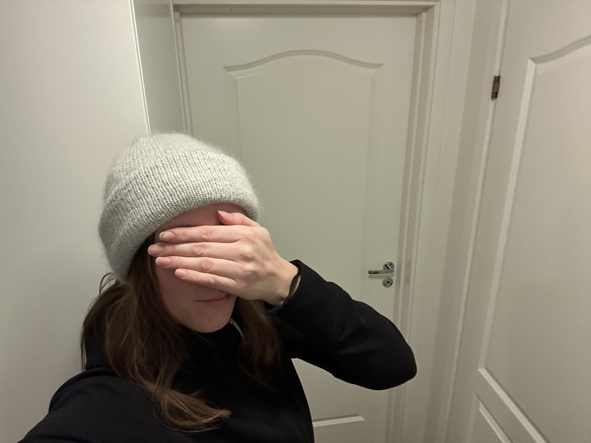

Oslomössan - mohair edition
- 4 minutes read - 746 wordsDenna historia börjar med att jag fått upp ögonen för PetiteKnits Kontrasttröja, specifikt den grågröna kombon. Men innan jag skulle lägga hundratals (tusentals?) kronor på garn ställde jag mig den högst relevanta frågan: gillar jag mohair? Och det visste jag inte, så det kändes rimligt att ta reda på som första steg.
Tillvägagångssättet som jag valde för att ta reda på det blev att sticka Oslomössan. Tyckte mössan såg mycket fin ut och kändes spännande med mohair!
Valde att efterlikna den grå versionen och köpte ett nystan Filcolana Arwetta Classic Very Light Grey och ett nystan Filcolana Tilia Natural White och körde sen igång!
Kanske inte körde igång sådär riktigt direkt. För visade sig att min kompis stickat exakt denna mössa för ett år sedan och att den blivit för liten! Så en viss rädsla uppstod att samma sak skulle hända mig. Den var främst tight just i början av mössan, alltså under mudden så jag började lägga upp LÖSA maskor.
Jag hade mätt mitt huvud med olika metoder och både själv och med hjälp och kommit fram till att Dam S skulle bli bra, lite marginal kanske till och med. Med huvudomfång dvs, inte i garnmängd då en ynka storlek upp skulle kräva ett extra nystan per garntyp.
Det där med lösa maskor gjorde mössan mycket stor, så rev upp och la upp igen med mitt vanliga handlag.

Men vänta… det är jättelite garn kvar. Och jag ska sticka massa mer. Fridge. Ett mätande påbörjades. Kommer garnet ens räcka? Överslagsräkningen sa “Absolut inte”. Jocke hade redan anmärkt att han tyckte mössan blev väldigt hög. Tänkte först “hallå, det är så den ska va” men så började utforskning om mössan kanske kan få bli lite kortare, det skulle ju ha den tydliga fördelen att det skulle bli en mössa till skillnad från ett pannband med uppvikt kant.
Här blev det en stor paus i stickandet, beslut alltså. Varför sa ingen att stickning är så mycket beslut? Mätte och funderade och väntade, repeterade.

Så jag räknade hur många meter garn som var kvar och noterade “11 meter”. Jag hade inte påbörjat minskningar än och ett varv tog 1,5 meter (enbart det faktumet var ju en chock?). Mina smarta anteckningar:
så 11 meter till att göra mössan längre
ett varv tar 1,5 meter (HOW?)
så kan typ sticka 6 varv? nä mindre
Räknade om lite och kom fram till 6 varv ändå med slutkommentaren letsgoooo fingers crossed,
Upprivande påbörjades igen (men bara några cm) och tänkte att det blir ju mer stickning for
the garnbuck om man river upp några gånger. Dåligt argument om fokus är på slutprodukten
men bra om man mest vill sticka för att det är trevligt.
Minns inte hur det gick sen, rev upp några varv några gånger, varför? Har förträngt? Kom till slutet iaf, tog kontrollbild:

Accepterade resultatet och stickade ihop och fäste. Nu var det ju bara mudden kvar… Eftersom mössans längd krympt typ 6 cm så behövdes mudden minskas. Nytt velande påbörjades, men dagar eller veckor(?) senare tog jag tag i det och satte upp mudden.
Det blev ärligt talat inte så bra, dels är uppvikningen ca 0,5 cm längre på ena sidan tror jag. Men främst är muddens rätsidan resten av mössans avsida och vice versa och jag tog för lite marginal för att täcka avigsidan med vikningen, så den kan glida fram lite. Det skulle nog gå att fixa genom att fästa lite till, det ska jag nog göra.
Lärdomen är oavset: SE TILL ATT HA MARGINAL MED GARNMÄNGDEN!
Uppdatering 2023-02-03
Publicerade inlägget igår och tänkte att nu (två år senare) är det dags att ta tag i den där mudden.
Eftersom garnet tog slut för snabbt så blev mössan kortare än enligt mönstret (tror jag?) och jag kompenserade genom att frångå instruktionerna för mudden.
Stickningens första 22 cm var aviga. Instruktionerna var att vika 10 cm in och fästa. Men jag valde att vika in kortare och dessutom fästa med typ 16 små knytningar så att det blev en ojämn känsla. Det blev iaf 3 lager på typ 23-24 cm stickning vilket gjorde av de aviga maskorna kunde sticka upp över mudden om mudden gled - ONICE!
Så idag tog jag bort de ungefär 16 små stygnen och fäste istället jämnt enligt instruktionerna. Mössan blev mindre hög men finare!
Nya fästningen (mudden är alltså utvikt här): 
Här kan man ana de aviga maskorna: 
Här ser den ut nu! 
Nu kan vi alla betrakta detta mössprojekt som avslutat! 💂🏻